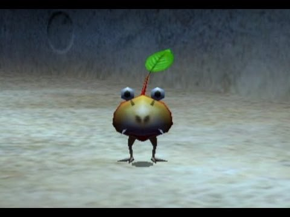

こんにちは、ザクザク食感です。
先日、ピクミン4をクリアしました。
思ってた何倍も楽しかった！！！！！
ので布教の意味も込めてここに思うことを書き留めておこうと思います。
ゲームの根幹の話はしませんが若干のネタバレを含みます！
今作の目的は、宇宙レスキュー隊の一員としてピクミン1と2の主人公であるオリマーを未知の惑星から救出することです。
オリマーが墜落してしまった惑星「PNF-404」には様々な原生生物が生息していて、それらを友好的な原生生物であるピクミンと協力して倒しながら捜索を進めていきます。
ピクミン1と2でもオリマーは同じ星で探索をしているので、この星の原生生物に関してはある程度研究が進んでいます。
その内容を見ることができるのが生物図鑑です。
例えば赤ピクミンの図鑑説明はこんな感じ
ピクミンは他の種との共生関係を築いて繁殖していく生物だということや、赤ピクミンが火に強い理由などが説明されています。
全ての原生生物がこのレベルでつくりこまれていて、捕食被捕食などの生態系も知ることができます。
また、今作から和名を見ることができて、赤ピクミンはアカネピクミンという和名です。この和名からも原生生物の生態系について知ることができます。
例えば同じピクミンでも岩ピクミンの和名はイワヤドリピクミンです。
図鑑説明を見てもらえばわかるように、岩ピクミンはヤドリピクミンという種が岩に寄生した姿らしいです。
だから和名もイワヤドリピクミンなんですね おもしれ～～～
ピクミン2にはコッパチャッピーという原生生物が登場します。

これはピクミンの代表的な敵であるチャッピーに葉っぱが生えているものなのですが、これもヤドリピクミンが寄生した姿だと考えられます（確か本当にそうだった気がするけどソースが出てこなかった）。
コッパチャッピーは敵でありながらピクミンと同じように働かせることができて、「自分に指示をしてくれるリーダーについていく」というピクミンの性質を持っています。
こんなかわいい見た目だけどちゃんと種の存続のために生きているのが生物っぽくてとても好きです。
話が少しそれましたが、岩ピクミンの図鑑には「水晶ジオードのような空洞になった岩の内部に生命活動に必要な器官を収めている」という記述があります。
水晶ジオード
これに根が張っていて内臓が入った生物だと思うとかなりグロい……
でもこのリアリティもピクミンの魅力だと思います。
先ほど少し話しましたが、チャッピーというこのゲームの代表的な原生生物がいます。
チャッピーの周りには小さいチャッピーが何匹か群れて生息しています。
一見親子のように見えるのですが実は違って、

チャッピーとは全く別の種だという設定があります。
コチャッピーはこの姿が成体で、チャッピーの幼体に擬態した生物です。
チャッピーの科目がイヌムシ科なのに対して、コチャッピーの科目はパンモドキ科になっています。
パンモドキ科の原生生物としては他にも、パンモドキというピクミンの餌を横取りしてくるハイエナのような生物がいて、
この生物の狩猟は他の生物に任せてそれを横取りするという生態を考えると、パンモドキ科の別種であることにも納得がいきます。おもしれ～～～！！！
これはあくまで妄想ですが、寝ているチャッピーを起こさないように周りのコチャッピーを倒すという駆け引きや、ピクミンが運んでいる餌を横取りしてくる生物と綱引きをするというゲーム性の構想が先にあって、それに合う設定が後付けされてたのだと思います。
そういう視点で見ても、こんなにゲーム性に合った設定がよく思いつくな……と感心しました。
ちなみに本当のチャッピーの幼体はどんな生物なのかというと、
こっちが本物なのに、発見された順番の影響でこっちが「コチャッピーモドキ」になっています。これも実際の生物学っぽくてとても面白いですね。
他にも新しく出てきた謎について話したいことがたくさんあるのですが、上手くまとまらなかったのでまた今度にします。
ピクミンは任天堂作品の中でもかなり難易度が高い方だと思いますが、今作は世界観を壊さないレベルで初心者でも遊びやすいようになっていました。
ピクミンをやったことがない人にもおすすめです！！！ぜひ遊んでみてください！！！
それでは、さようなら。